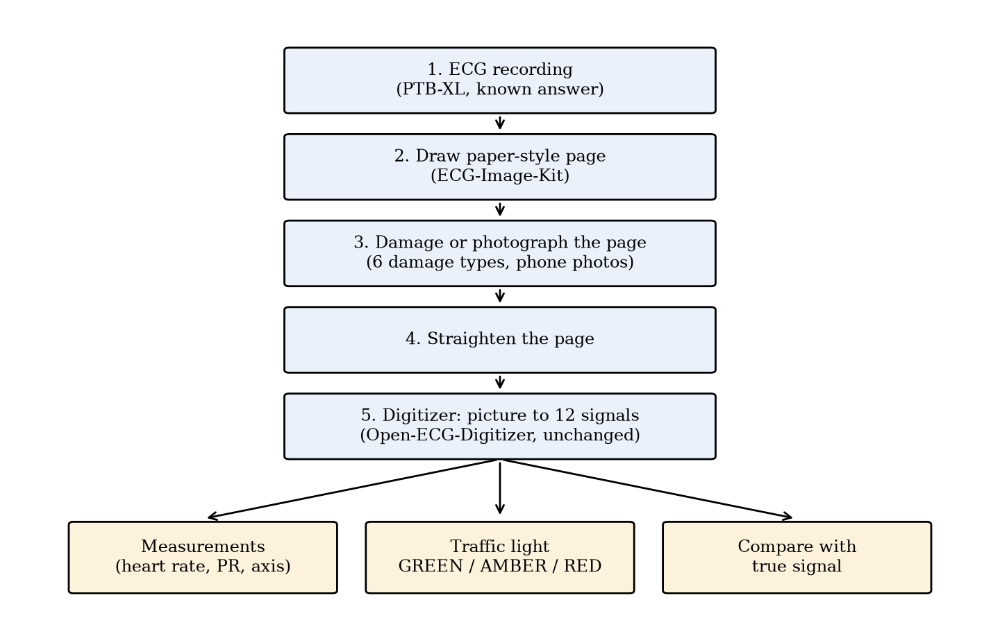
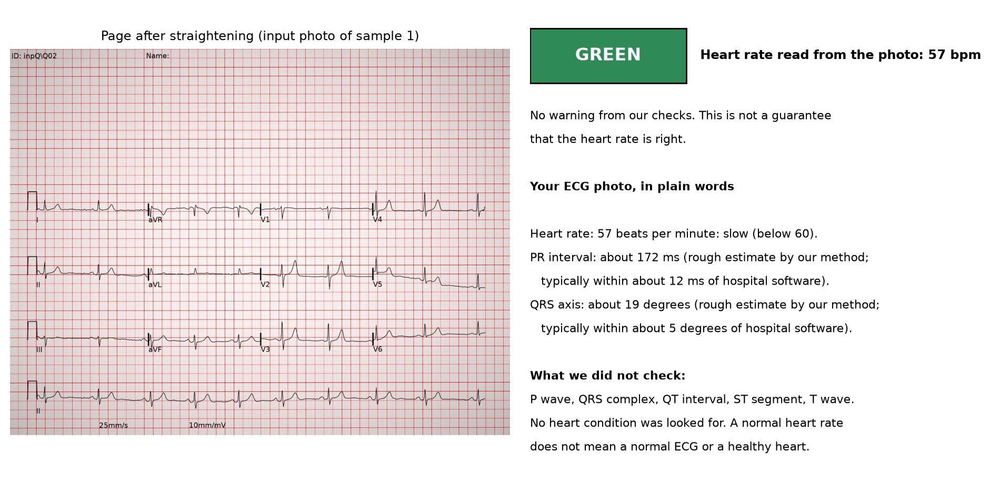

Capstone project, VIT-AP University
When the ECG photo is bad, which numbers can you still trust?
We damaged ECG pages in controlled ways, photographed them with a phone, and compared what an open-source digitizer reads back with the true recording. Then we checked each measurement on its own and kept only the ones that passed rules we wrote before the test.
Try it: damage the page
The strip is an illustration, not patient data, and the damage is exaggerated for visibility. The percentages are the measured results on 99 held-out recordings (a heart rate is wrong when it is more than 5 beats per minute off).
What we found
Six findings, each with how sure we are
Pre-specified: the rule was written before the result. Exploratory: the idea came after earlier data. Confirmed: tested once on new photos with the rule fixed in advance.
How it was tested
One fixed digitizer, a known right answer, and rules written first
Real recordings from PTB-XL are drawn as paper-style pages, damaged or photographed, and read back by Open-ECG-Digitizer, used unchanged. The same code measures the true and the digitized signal, and the two are compared.
Reference values for intervals and axis come from a commercial algorithm (12SL). Where the two commercial algorithms disagree with each other, we did not attempt the measurement.
Calibration could only shift a value, never rescale it, because rescaling hides errors by pulling values toward the average.

Warning the user
A traffic light computed from the digitized signal
The light was frozen before any real photo was scored. Below: real competition photos that gave a reading, and how often the heart rate was wrong under each light.
GREEN means no warning was raised. It is not a guarantee. RED means the read looks unreliable and says nothing about the heart. The check also flags irregular rhythms more often, because a truly irregular rhythm looks like a failed read.
A fix that held up
Flatten the page before reading it
The fix finds the page in the photo and maps it to a standard rectangle. We tested it once on 40 new phone photos of 20 new pages, with the pass rule fixed before the photos existed. Each dot is one photo; red dots gave no usable heart rate or a wrong one.
12 photos became good and none became bad (exact paired test, p = 0.0005). One phone, one laptop screen, 20 recordings. The two remaining bad readings come from one page that the digitizer misreads whatever the photo.
A larger test used 120 simulated phone photos (made by a script, not a camera). Straightening cut bad readings from 64 to 21. One of 71 GREEN readings on the straightened photos was still wrong, so GREEN is not a guarantee.
What the demo shows
A number is shown only if it passed its own test
Each measurement was tested on a sealed set and on phone photos against rules written first. A small average error was not enough: we also checked slope and bias, because they expose a measurement that squeezes values toward normal.
| Measurement | Result | Why |
|---|---|---|
| Heart rate | Shown | With the traffic light. GREEN is not a guarantee. |
| PR interval | Shown, with conditions | Typical error 12.0 ms on straightened photos. Only under GREEN, a straightened page and a steady rhythm. |
| Frontal QRS axis | Shown, with conditions | Typical error 4.4 degrees; 95% within 30 degrees. Degrees only, no verdict word. Right axis not shown to work. |
| QT interval | Not shown | Slope 0.68 to 0.69: short QT values were read too long, so they would look normal. |
| QRS duration | Not shown | Bias +15.4 ms on photos, slope 0.74, after three attempts. |
| P wave amplitude | Not shown | Passed on drawn pages, failed on photos: slope 0.77 against 0.8. |
| T wave amplitude | Not shown | Stopped in development: best slope 0.68. |
| ST segment, P and T duration | Not attempted | The two commercial reference algorithms disagree, so no reference exists. |

What this does not show
Limits we state up front
- One digitizer, one phone and one laptop screen. Photos of a screen, not of printed paper.
- Damage is simulated on computer-drawn pages, and the digitizer was trained on a similar generator.
- Real captures contain fewer than 100 wrong readings, so those numbers are descriptive.
- References are commercial algorithms, not expert readings. The pass thresholds are the team's proposal and are not yet approved by the guide.
- Only the straightening fix was confirmed with a rule fixed in advance. Everything else is exploratory.
- We make no claim that the warning helps patients. This is a research prototype and not a medical device.
Who and where
Team and materials
Guide: Dr. Tarun Narayan Shankar. School of Computer Science and Engineering, VIT-AP University.
Every number on this page comes from results/FINAL_NUMBERS.md. Rules for each analysis are in docs/plan/analysis_plan_changes.md, written before the run. The demo runs locally: double-click demo\run_demo.bat and open http://127.0.0.1:7860.